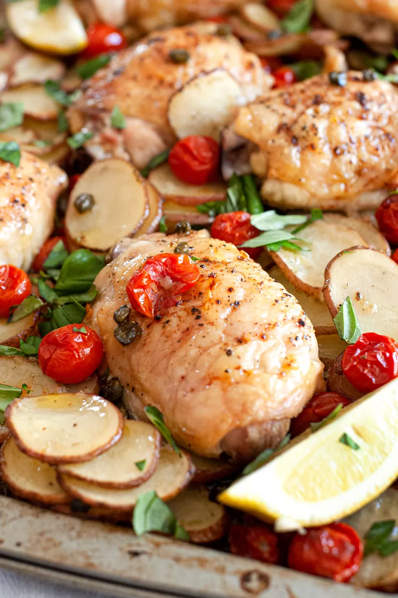

Sheet Pan Lemon Chicken with Potatoes, Tomatoes, and Capers
The tomatoes roast alongside the chicken until the juices ooze and they begin to caramelize.
This recipe
takes
less than 20 minutes to assemble, so you won’t be in the kitchen long. While the chicken roasts, you can hang
out on your front stoop with this easy-to-make Bees Knees Cocktail until the timer dings.
It might seem like a simple thing, but when it comes to sheet pan suppers, pan size is important. That’s because
if your pan is too small, your ingredients will crowd and everything will cook unevenly and there won’t be any
crispy bits (on the chicken or veg) that we all love so much.
It’s ideal to use a sheet pan that’s roughly 11 x 17 inches. That’s a standard jelly roll pan. If your
baking sheets are small, consider dividing the ingredients between two pans instead. Lastly, I find food browns
better when you use aluminum rather than a non-stick surface, particularly one that has darkened from years of
hard work!
If you have a bit of time, it’s ideal to season your bird a day or two before cooking. I
typically salt and pepper the chicken and leave it uncovered in the fridge, making sure it’s not touching any
other food.
Ingredients
- 1 1/2 pounds small, waxy potatoes, such as red, fingerlings, or yellow finn
- 1 pint (2 cups) cherry tomatoes
- 3 tablespoons capers
- 1 large lemon
- 3 tablespoons extra-virgin olive oil
- 1 teaspoon ground cumin
- 2 large cloves garlic, grated on a microplane or finely chopped
- 2 1/2 teaspoons kosher salt, divided
- 2 1/2 pounds bone-in, skin-on chicken thighs
- Freshly ground black pepper, to taste
- 1/3 cup fresh basil, roughly chopped, for garnish
Recipe instructions
- Preheat the oven to 425°F.
-
Slice the potatoes into 1/8 to 1/4-inch-thick rounds
- Pile the potatoes, cherry tomatoes, and capers on a large baking sheet.
- Cut the lemon in half and squeeze 1 tablespoon juice into a small bowl. Cut the remaining lemon half into
several wedges and reserve for later.
In the small bowl with the lemon, whisk in the olive oil, cumin,
garlic, and 1 teaspoon salt. Pour over the potatoes, tomatoes, and capers and use your hands to coat
everything.
Spread out the potatoes, tomatoes, and capers into a single layer.
- Season the chicken thighs on both sides with 1 1/2 teaspoons salt and freshly ground black pepper, to
taste.
- Nestle the chicken thighs amongst the potatoes, tomatoes, and capers spacing them evenly across the baking
sheet. It’s ok if some of the potatoes are beneath the chicken.
- Roast for about 40 minutes, spooning or brushing the chicken with pan juices and stirring the potatoes
about halfway through.
The sheet pan dinner is done when the potatoes are tender and starting to brown
and the chicken is tender, the skin is crispy, and the meat registers 165°F with an instant-read
thermometer.
-
Add the reserved lemon wedges to the baking sheet. Scatter the basil over everything. Let the chicken rest
for 10 minutes and serve.
Home